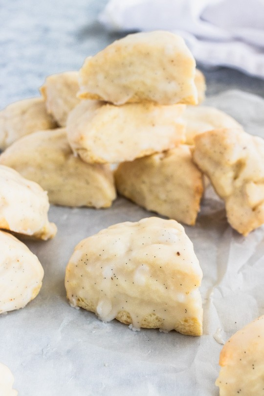

Vanilla Bean Glazed Scones

The recipe I chose is a recipe for vanilla scones. I chose this recipe because vanilla bean scones are a recipe I've been really wanting to try as I usually always buy them from Trader Joe's.
The recipe:
Vanilla Bean Scones
ingredients:
2 cups (272 g) cake flour
⅓ cup (66g) white sugar
1 ½ t (7 g) baking powder
½ t (3 g) sea salt
1 stick (114 g) butter, cold and cut into small cubes
⅔ cup (5.3 oz.) whipping cream
2 tsp. vanilla extract
for the glaze:
2 cups powdered sugar
1 vanilla bean, scraped
5-6 Tbsp. whole milk
instructions:
1. Preheat the oven to 350F and line a large baking sheet with parchment paper. Sift together the flour, sugar, baking powder, and sea salt. Cut in the cold butter with a pastry blender (alternatively, you could rub it in with your fingers) until the mixture resembles damp sand.
2. Using a fork, blend in the whipping cream and vanilla extract until it comes together into a dough--you may wish to finish with your hands, pressing it into a ball.
3. Divide the ball into 3 equal portions, then flatten them on the baking sheet into discs about ¾" high and 4" across. Use a large knife or a bench knife to cut the discs into six equal triangles, first across then each half into thirds. Separate the triangles to give them room to rise as they bake.
4. Bake for 15-18 minutes, or until the bottoms are golden brown and the tops are no longer doughy. Remove from the oven and cool completely.
5. For the Glaze:
6. With a small sharp knife, split the vanilla bean open lengthwise and scrape it with the sharp edge of the knife. You will have small, clumps of tiny black beans on the knife. Scrape it into a bowl with the milk and whisk them together. Sift in the powdered sugar until it is all combined.
7. Dip the tops of the scones in the glaze, then set them on a cooling rack and allow the frosting to harden for about 30 minutes before eating.
3 Recipe Links
Alexandra's Kitchen
I like this one because it's clean and uncluttered but still feels warm. There's a lot of whitespace and the recipes are easy to read. I also like the green color palette.
Green Kitchen Stories
I like how clean it is. Every recipe leads with a big image in a clean grid, so it's really easy to scan and the food is the main focus. The layout is very simple with clean margins.
The First Mess
The First Mess has a really clean layout and natural aesthetic that I like. The photos are big and nice to look at, the recipes are easy to read and follow, and nothing on the page feels cluttered.
3 Non-Recipe Links
Glossier
I like how clean and editorial it is. Soft pink everywhere, lots of whitespace, and the products are shown with simple HD photos. I'd want to impelment the grid and colors and overall magazine feel.
Papier
I like that they keep the layout plain so the notebook and card designs stand out. i also like the cream backgrond and how aligned the images are in a way that makes the website feel cohesive.
Brandy Melville
I like their editorial layout and the navy and pink color palette. The font works really well with it too, and the whole thing feels put-together and stylish.